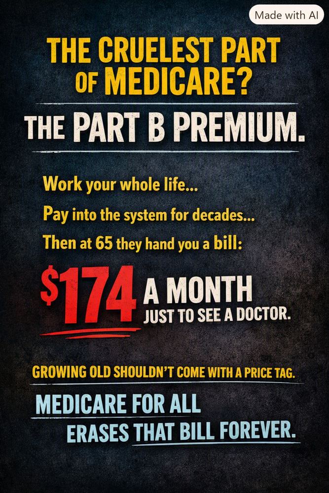

Article 24: The Medicare Part B Premium: A Heavy Burden on Fixed Incomes
Why monthly Part B premiums can strain retirement budgets.

Download illustrated Word document (.docx)
Author-supplied advocacy illustration. The $174 figure reflects an earlier premium level; it is not the current standard Part B premium.
You worked, you paid in—and the bills continue
For decades, American workers contribute Medicare payroll taxes. When they reach Medicare eligibility, many are surprised to discover that outpatient and physician coverage under Medicare Part B still carries a monthly premium. Medicare is an extraordinary public achievement, but it is not automatically free at the point of retirement. For people on limited fixed incomes, that distinction can be painful.
A monthly premium can sound modest to someone with substantial savings. To a retiree choosing between medication, groceries, electricity and rent, it is a recurring claim on money that may already be stretched to the breaking point. The premium is generally deducted directly from Social Security benefits, so the reduction in take-home income is difficult to ignore.
Medicare Advantage does not make Part B premiums disappear
This is one of the most widely misunderstood parts of the Medicare system. Medicare Advantage (Part C) is a private-plan alternative for receiving Medicare-covered benefits, but enrollees generally must remain enrolled in both Part A and Part B and continue paying the Part B premium. A Medicare Advantage plan may advertise a $0 additional plan premium, yet that usually does not mean the beneficiary owes $0 for Part B. Some plans offer a Part B premium reduction, sometimes called a giveback, but that benefit is not universal and may not cover the full premium.
Medicare Advantage can also involve copayments, coinsurance, provider networks, prior authorization and annual out-of-pocket limits. The details differ by plan. The central point remains: a person may have what seems like excellent Medicare Advantage coverage and still face both the monthly Part B premium and significant costs when they actually need care.
Why the number in the illustration needs context
The illustration refers to $174 a month. The standard Part B premium was $174.70 in 2024, and premium amounts change from year to year. The standard monthly premium was $185 in 2025 and $202.90 in 2026. Higher-income beneficiaries can pay more, while some people with limited income and resources qualify for Medicare Savings Programs that pay their Part B premiums. Not everyone pays the standard amount out of pocket.
For perspective, $202.90 per month amounts to $2,434.80 a year before considering other medical expenses. For a person whose monthly income barely covers basic necessities, that is a meaningful financial burden—not a minor administrative detail.
What Medicare for All could change
Under comprehensive Medicare for All proposals that eliminate separate premiums and cost-sharing, the traditional Part B premium would no longer be charged as a distinct monthly bill. Coverage would be financed through a new public funding structure rather than by continuing the current collection of Medicare premiums, private premiums, deductibles and copays. The precise benefits and financing would depend on the legislation enacted.
That does not mean healthcare becomes free to society. Doctors, nurses, hospitals, medicines and equipment still must be paid for. The question is how to raise the money fairly and predictably, and whether a redesigned system can reduce administrative costs, negotiate prices and protect people from large bills when they are sick.
The moral and practical test
A retired worker should not have to regard a doctor visit as a threat to the household budget. Neither should a person with a small Social Security check have to choose between retaining medical coverage and buying necessities. Medicare Savings Programs provide important help today, but eligibility rules, awareness and enrollment barriers mean that assistance does not reach everyone who might benefit.
A stronger system would make medically necessary care accessible without recurring premium anxiety or surprise bills. That is one reason Medicare for All deserves serious consideration: it offers the possibility of replacing fragmented individual charges with dependable, universal protection.
A better promise for retirement
We should be grateful for Medicare without pretending it is beyond improvement. The Part B premium exposes a fundamental contradiction: a nation can promise health coverage in retirement while still asking people with very little income to make difficult financial sacrifices to keep it.
The goal should be straightforward. When Americans retire, their healthcare should be secure. When they get sick, their attention should be on healing. And when policymakers evaluate Medicare for All, they should count the burdens people pay today—not only the taxes that might finance a better system tomorrow.
Healthcare should not become another monthly bill that stands between older Americans and financial dignity.
Notes and sources
Centers for Medicare & Medicaid Services (CMS), 2024 Medicare Parts A & B Premiums and Deductibles; 2025 and 2026 Medicare Parts A & B Premiums and Deductibles. https://www.cms.gov/newsroom
Medicare.gov, Medicare Advantage Plans and Part B costs; Medicare Savings Programs. https://www.medicare.gov/basics/costs/help/medicare-savings-programs
Policy note: Eliminating separate Part B premiums describes a possible Medicare for All design, not a change already enacted into law. Financing and distributional effects would depend on the final plan.
Willis Butts | Medicare for All